01 · Getting started
From download to the Lands
goThoom is an installer-free desktop client for Windows, macOS, and Linux. Unpack it somewhere you can keep it, launch it, and allow it to download the current Clan Lord artwork and sounds. Writable user data is stored separately so the application can be replaced during an upgrade.
Install goThoom
- 01Download your platform build
Use the downloads page and choose the current Windows, macOS, or Linux archive.
- 02Extract the app
Each platform ZIP contains only the executable, or the macOS app bundle. The extracted filename includes the release number so it is easy to distinguish from an older copy.
- 03Launch goThoom
The client checks its game resources and offers to download missing or outdated files. Keep it open until that process finishes.
If macOS blocks the unsigned app, open System Settings → Privacy & Security and choose to open it. goThoom keeps its writable data in its application container on macOS.
Add and connect a character
In the Login window, select Add Character, enter the character name and password, and choose whether to remember the password. Leave Keep settings separate off to share the global client setup, or opt in when this login should have independent settings. To change those choices later, select the character and open Edit Character; there you can enter a new password, change Save Password, or choose whether it keeps settings separate. Select the character and press Connect. If a saved character has no remembered password, goThoom asks for it when you connect.
Remember Password is a convenience feature stored in the local client data. It is not an operating-system password vault. Anyone who can read those files should be treated as having access to the saved login.
Use the trash control beside a character to remove it from the local list. This only removes the local entry; it does not delete the Clan Lord account.
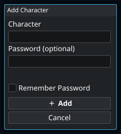
- 1
You can add the character without entering a password here. When you later press Connect, the client asks for it if no password is available for that login. Adding a character only creates a local login entry; it does not create a Clan Lord account.
- 2
Use a character profile for preferences such as window positions and tiled layout, UI scale and themes, text sizes, status bars, speech bubbles, graphics effects, audio levels, TTS voice, and notifications. The first profile copies your current shared setup. Turning this off returns to shared settings without deleting the profile. Server addresses and file locations remain shared; script and macro enablement have their own Player/All choices.
Your first connection, step by step
- Finish the resource downloads before trying to enter the game. The artwork and sound files are separate from the client executable.
- Choose Add Character. Enter the character you already use for Clan Lord. Adding a local entry does not create a new paid account.
- Leave the password empty if you want to enter it at connection time. Otherwise enter it and decide whether to check Remember Password.
- Leave Keep settings separate off for a shared setup. Enable it if this character needs its own layout or preferences.
- Press Add, select the saved character in Login, then press Connect. Enter the password if prompted.
- After connecting, try a short movement and a chat message. Open Settings from the toolbar to make the client comfortable.
Select the character you intend to use before opening Edit Character or adjusting its separate settings.
First-run setup wizard
The setup wizard begins with the built-in defaults and previews layout, controls, graphics, and audio choices. Its graphics check briefly shows One moment, checking performance. while it selects Default or iGPU Graphics for the current machine. You can run the wizard again later from Settings → Tools → Setup Wizard; reopening it starts from your current settings rather than resetting them first.
On a fresh setup, the input bar stays open, click-to-toggle walking and middle-click window movement are off, and the main windows use the centered tiled layout. Inventory and the combined Chat/Console are on the left, the Game is in the center, Players is on the right, and the toolbar is inside Inventory. Smooth movement, small-moving-sprite interpolation, network latency and server phase timing, sound, music, speech bubbles, timestamps, and game notifications are on; chat text-to-speech, automatic recording, and per-character settings profiles are off.
02 · Essential controls
The controls you will use constantly
Movement
Left-click in the game view to walk toward the pointer. Enable Click-to-Toggle Walk if you prefer a click to establish a continuing target instead of holding the button.
Keyboard movement can be configured under Controls, including its speed. The Settings → Controls → Gamepad window is marked work in progress and does not yet function; use mouse or keyboard movement.
Chat input
The input bar is active by default: type a message and press Enter to send it. Esc cancels and closes the bar; Enter opens it again. If you turn off Input bar always open, press Enter before typing and again to send. ↑ and ↓ browse sent-message history.
While typing, Ctrl+V pastes and Ctrl+C copies selected text, or the input line if there is no selection. Use Cmd on Mac.
Scrolling and windows
Use the mouse wheel over a list or text window. Drag the dividers between panes to resize your workspace. Settings and other dialogs can be moved by their titles.
Command palette
Press Ctrl+Shift+P or choose Tools → Palette. Type to filter, use ↑/↓, press Enter to run, or Esc to close.
Pointer actions at a glance
| Where | Action | Result |
|---|---|---|
| Game | Left-click | Walk toward the pointer. |
| Inventory item | Single-click | Select the item. |
| Inventory item | Double-click | Equip or unequip it. |
| Inventory item | Shift + double-click | Use the item. |
| Inventory item | Right-click | Open Equip/Unequip, Examine, Show, and Drop actions. |
| Player | Single-click | Select the player. |
| Player | Right-click | Open common player actions. |
| Chat/Console line | Right-click | Copy that line. |
| Input bar | Right-click | Paste, copy the line, or clear it. |
Choose how to walk
- Start with ordinary mouse movement: point where you want to go and hold the left button to walk toward it.
- For a continuing movement target, open Settings → Controls and enable Click-to-toggle movement. Try it in a clear area so you can get used to toggling movement.
- Adjust Keyboard Walk Speed for keyboard walking. This changes the client’s requested movement speed; it does not remove movement restrictions imposed by the game.
- The Gamepad window is currently marked “Work in progress, does not function.” Use mouse or keyboard movement. Use the input tester if a key or mouse button is not recognized as expected.
- Keep Middle-click moves windows off if you use that button for game actions. When enabled, it provides another way to reposition movable windows.
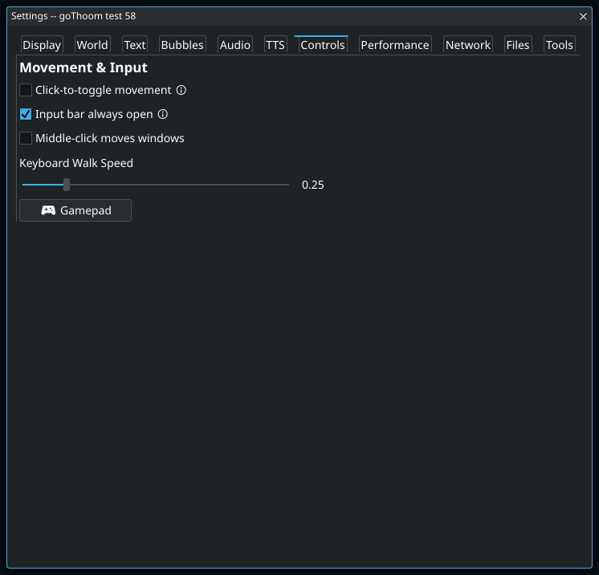
- 1
With this off, Enter opens the input bar and Enter again sends the message. With it on, you can begin typing without first opening the bar. Chat and Console share one draft and sent-message history, so switching between their input bars does not give you a second independent message.
Mac shortcuts and dictation
On Mac, use Cmd for copy/paste and Cmd+Shift+P for the command palette. Option+arrow moves by word; Cmd+arrow moves to the start or end of the line. The key tester labels the modifier as Cmd; script bindings call it Meta.
For dictation, first enable Dictation in macOS Keyboard settings. Open the game input bar, activate your configured macOS dictation shortcut, finish speaking, and review the text before sending. Native dictation and IME composition are connected to the game input bar; other client text fields may behave differently.
Sliders
Drag normally for broad adjustments. Hold Shift to snap to whole numbers, or hold Ctrl for fine movement at one-eighth speed.
03 · Interface and windows
Make the client fit the way you play
The toolbar
| Control | What it opens or does |
|---|---|
| Settings | Opens the main settings categories. |
| Actions | Opens Hotkeys, Shortcuts, Keybindings, Scripts, Legacy Macros, and Saved Data. |
| Tools | Opens live Stats, the command Palette, this online Help manual, and the Snap capture window. |
| Audio | Opens the live mixer for master, game, music, TTS, notification, and enhancement levels. |
| Record | Starts or stops a .clMov session recording. When disconnected, it arms recording for the next connection. |
| Logout | Disconnects and returns to the Login window. |
Default tiled layout
Tiled mode is enabled by default. Inventory occupies the upper-left, the combined Chat/Console occupies the lower-left, the Game fills the center, and Players occupies the right side. The toolbar starts inside Inventory. Separating Chat from Console adds Chat to the lower-right; the alternate layout puts the Game on one side of a shared panel.
- Drag a divider to resize neighboring tiles.
- Auto-size side panels adjusts panel widths to use empty space beside the Game. Drag either Game divider to move the Game sideways; turn the option off to keep the current sizes and resize panels independently.
- Open Settings → Display → Window Layout to swap Inventory and Players, choose message placement, combine Chat with Console, or choose the game side.
- The toolbar can be moved from its default home in Inventory to Players.
Choose a layout and place your message panes
- Open Settings → Display. In Windows & Toolbar, open Window Layout.
- Click a layout preview. For a message row, Messages above game switches between above and below. The client rearranges the panes immediately.
- Use Swap inventory / players list to exchange the lists. With Side, Swap game side moves the game to the other edge.
- Decide whether to check Combine chat + console. The available previews update to match. In Game centered, use Combined messages on right to choose the side for the shared pane.
- With separate messages sharing one area, use Message split: Side by side puts them next to each other; Stacked puts one above the other. Use Swap console and chat to reverse their order.
- Drag a divider to adjust the row height or message split. The client remembers these sizes.
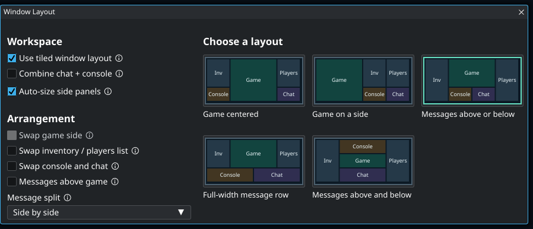
- 1
Side by side gives each message pane more height but shorter lines; Stacked gives longer lines but less visible history in each pane. This choice applies when Chat and Console share one message area. It is unavailable when they are combined, or when the layout already puts them in separate areas, such as above and below the game.
Compare tiled layouts
Compare the layout patterns below, using the checkboxes to try different pane positions. In Settings → Display → Window Layout, click a preview to choose that layout. These diagrams show relative positions; drag the dividers in the client to set your own sizes.
Move the message row above or below the game without changing list order. Separate messages can share a row or stack; Above & below puts the game between them.
The game keeps its full height. Combining messages lets the list above the former Chat pane expand.
All lists and messages share the other side. Swapping the game side keeps their order intact.
Keep the lists at full height while messages sit above or below the action.
Use the whole workspace width for messages. Stacked panes give each stream longer lines.
Keep conversation and client output on opposite sides of the game. Swap Console and Chat to choose which is above.
Let the side panels use extra space—or resize them yourself
Auto-size side panels adjusts their widths to use space beside the game while preserving room for the game’s proportions. With no message rows above or below, this often expands the side panels into otherwise empty space.
- On: the game column is sized automatically. Drag either vertical game divider to move the game sideways; both dividers move together.
- Off: the current sizes stay exactly where they are. Drag the dividers independently to give panels more or less room.
- Turn it back on: the client recalculates around the game’s current position, subject to the space needed for the lists and toolbar.
This option is unavailable with Game on a side. Use that layout’s game/panel divider directly.
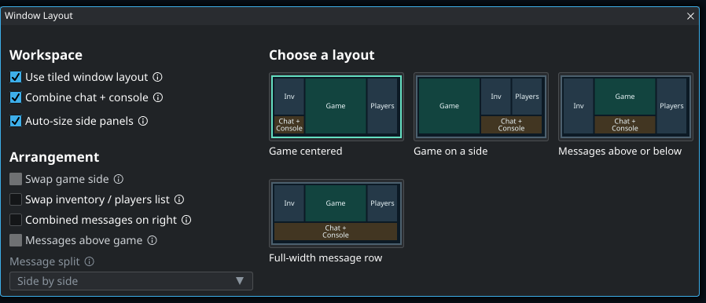
- 1
Extra width beside the playfield can become wider lists instead of empty space. With automatic sizing on, dragging either game divider slides the game sideways and moves both dividers together. Turn it off to keep the current sizes and resize each side independently. Turning it back on recalculates around the game’s current position.
Adjust or restore the layout
Drag pane dividers to change the space available for the game, lists, and messages. To start over, choose Settings → Display → Reset Windows and confirm the layout reset. Your graphics, audio, and other preferences are kept.
Use Toolbar Placement in the same Display page to put the toolbar in Inventory or Players. Leave enough width in that list for the toolbar controls.
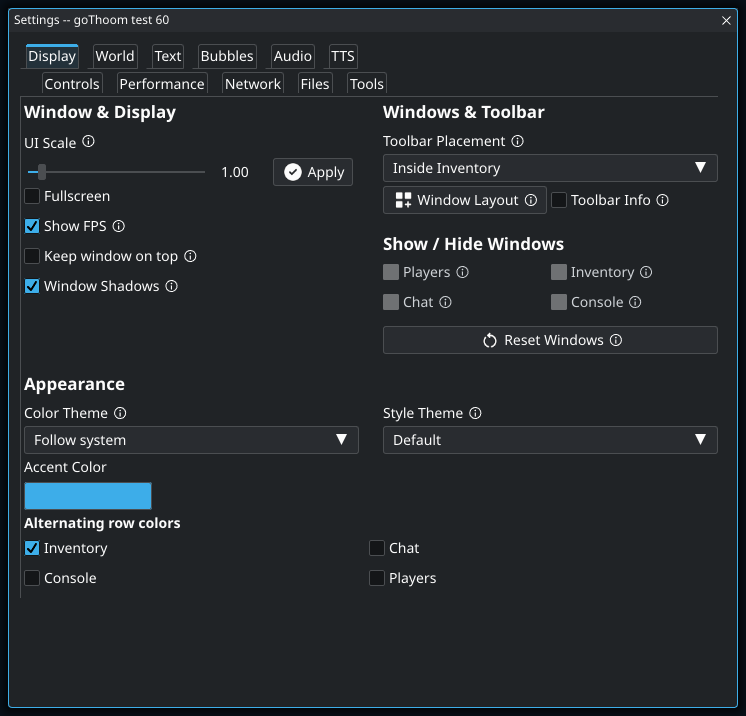
- 1
Use this when buttons, menus, and window controls are all too small. If only the conversation is hard to read, increase Chat Window Font Size in the Text tab instead; that gives you larger text without enlarging every panel. This slider takes effect when you press Apply.
- 2
Use this to recover a lost panel or an awkward arrangement. It resets the window layout, not your graphics, audio, and other preferences.
Text, scale, and fullscreen
Settings → Display controls UI scale, fullscreen, themes, window layout, and the optional FPS display. Automatic HiDPI scaling follows the monitor scale; the manual UI scale lets you tune it further. Settings → Text contains separate size controls for Chat, Console, Inventory, Players, names, and bubbles.
04 · Chat and messages
Speak, review, copy, and notice
By default, Chat and Console are combined in the lower-left Console tile. It contains player-facing conversation along with client information, script output, and diagnostics. Disable Combine chat + console in Window Layout to add a separate Chat pane. Open it from Settings → Display.
- The input bar grows as the message wraps.
- Right-click a Chat or Console line to copy it; the copied line briefly highlights.
- Timestamps are enabled for both Chat and Console by default; each can be disabled separately, and their shared format can be changed in settings.
- Mentions of
@your-nameor@your-professionare highlighted and can play a distinct sound. - Message text colors, alternating rows, and font sizes can be customized. Text settings also let you independently enable Autocomplete and Spellcheck.
Separate Chat from Console without losing your draft
- Open Settings → Display → Windows & Toolbar.
- Uncheck Combine chat + console. Chat gets its own pane.
- Click the input bar in either Chat or Console and continue typing. They share the draft and sent-message history.
- If the input bar is closed, press Enter. Enable Settings → Controls → Input bar always open to keep it available.
- Use Window Layout to choose message placement and split direction.
- Check Combine chat + console again to return to one message window.
Make chat and lists easier to read
- If the whole interface is too small, adjust Settings → Display → UI Scale and press Apply.
- If only text is too small, open Settings → Text. Adjust Chat Window Font Size and Console Font Size separately. Inventory, Players, names, and speech bubbles have their own sliders.
- Enable or disable Chat timestamps and Console timestamps independently. The timestamp format field controls their shared format.
- Use Text Colors for message colors. Use Display → Appearance → Alternating row colors to stripe only the lists where that helps.
- Turn Autocomplete and Spellcheck on or off independently under Input Assistance.
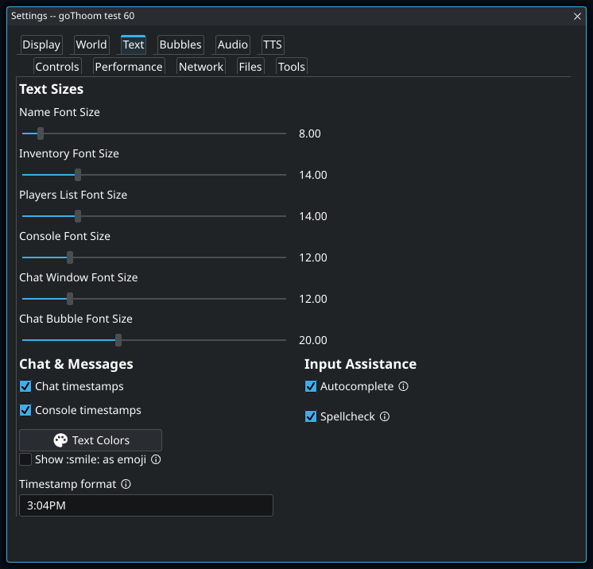
- 1
Chat, Console, overhead names, and speech bubbles have independent font sizes. If you separate Chat from Console and one looks smaller, adjust its own slider. Enlarging chat text also wraps lines sooner, so a wider message pane may make more difference than increasing the font again.
UI scale changes controls and windows; font-size sliders change specific text. Enlarging both at once can make the layout much larger than you intended. Change one, check the result, then adjust the other if needed.
Speech bubbles
Speech bubbles start enabled in Modern lifetime mode for every message type and source; animation is optional. A clear bubble is centered above its speaker; near an edge or other bubbles, placement moves as needed while keeping the pointer anchored. Settings → Bubbles → Message Bubbles controls whether bubbles appear, how long they last, their scale and opacity, animation, overlap prevention, and which message types or sources are shown. Modern lifetime uses a base duration plus time per word; Classic uses a fixed duration.
Show fewer bubbles or keep them visible longer
- Open Settings → Bubbles. Choose Bubble Lifetime: Modern uses a base duration plus time per word; Classic uses a fixed lifetime.
- For Modern mode, increase Modern Base Life (s) or Modern Life per Word (s) if bubbles disappear before you finish reading.
- Adjust Bubble Scale and Bubble Opacity to taste.
- Open Message Bubbles. Leave the master Message Bubbles checkbox on, then disable message types or sources you do not want over the game.
- Use Prevent Bubble Overlap to let bubbles move apart. Toggle Animated Chat Bubbles independently.
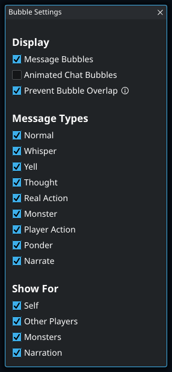
Useful Clan Lord commands
Commands begin with / or \. Common examples include /think, /thinkto name message, /who, /info name, /share name, /unshare name, /equip item, and /useitem item. Type /help command for the server’s help for a specific command.
For a broader list, see the repository’s Clan Lord command reference.
05 · Players and inventory
Act without retyping every command
Players
The Players list uses the appearance of each name to show sharing relationships and clan membership. Read sharing from your character’s point of view:
| Name appearance | Meaning |
|---|---|
| Underlined | You are sharing your experiences with this player. |
| Bold | This player is sharing their experiences with you. |
| Bold and underlined | You are sharing with each other. |
| Italic | This player is in your clan. Italics can combine with either sharing style. |
Sharing in one direction does not imply sharing in the other. In the title, Shared counts players you share with; Sharing counts players sharing with you. A mutual relationship contributes to both counts.
For an additional visual cue, enable Settings → World → Players List → Show sharing icons in Players list. The icons appear beside names and distinguish outgoing, incoming, and mutual sharing. Hover an icon to read the direction in words. Name styling works even with the icons off, which is the default.
The list also includes a recently seen group by default. A player’s presence there does not mean they are still on screen.
Right-click a player for Thank, Curse, Anon Thank, Anon Curse, Share, Unshare, Info, Pull, or Push. The command palette can also search actions for the selected player. The recent group can be hidden under Settings → World → Players List.
Inventory
Select an item with one click. Double-click to equip or unequip it; Shift-double-click to use it. The right-click menu offers Equip/Unequip, Examine, Show, Drop, and Drop (Mine). When an inventory item has a hotkey, its key is displayed in brackets before the item name.
Selected values in hotkeys
User hotkeys can refer to context values such as @selected.player, @selected.item, @hovered, @right.clicked, @equipped.left, and other equipment slots. This makes reusable commands such as /info @selected.player practical.
06 · Settings and profiles
Choose the experience per character
The main Settings window has eleven tabs: Display, World, Text, Bubbles, Audio, TTS, Controls, Performance, Network, Files, and Tools. Related controls share clear sections, and controls that need more room open a dedicated subwindow.
Appearance
Choose interface themes, palettes, row styling, status bars, name tags, fonts, and speech bubble behavior.
Graphics
Adjust artwork scaling, foreground fading, shadows, shader lighting, replacement effects, gamma, dither cleanup, and animation smoothing. Player illumination and procedural effects participate in the same night-lit world.
Controls
Choose click-to-toggle walking, keyboard movement speed, middle-click window behavior, input-bar behavior, and the gamepad work-in-progress window.
Performance
Control VSync, sound and artwork precaching, activity indicators, background power saving, and the low-VRAM Potato GPU mode. Activity dots mean artwork decoding/processing (green), audio decoding (amber), and GPU artwork upload (red).
Status bars and text input
Settings → World → Status Bars offers Regular, Modern -- thin, and Hidden styles. Modern -- thin is the default; choose a screen placement or enable status bars below the toolbar hand slots. Settings → Text keeps chat and timestamp controls beside separate Autocomplete and Spellcheck options.
Graphics and performance
The Performance & visuals manual explains presets, artwork resolution, smooth movement, lighting, caches, and power saving. Start with its symptom table to distinguish a rendering problem from a loading pause or a frame-rate cap.
Arrange status bars and reduce name clutter
- Open Settings → World. Choose a status-bar placement and style.
- Enable Status bars below toolbar hands if you want the bars near your equipment instead of in the game view.
- Use the Character Names section to adjust the name background, health display, and bar placement.
- Enable Hide My Name Tag or Show name-tags only on hover if the scene feels crowded.
- In Players List, choose whether recently seen players and clan members get their own groups.
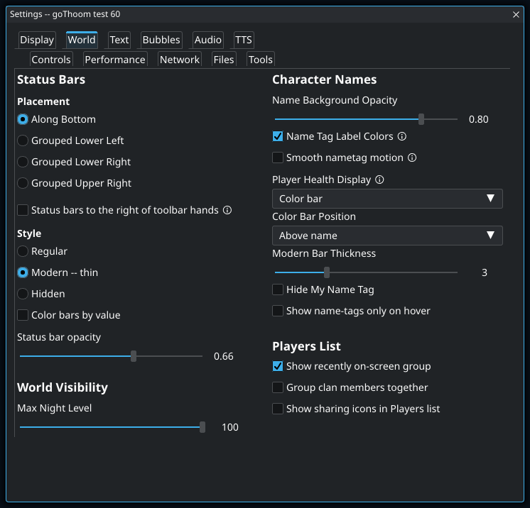
- 1
This keeps recently seen players easy to select after they leave the view. Being listed here does not mean a player is still on screen. Use the group to find a familiar name again, but check the game view before assuming they are still nearby.
- 2
Names already indicate sharing: an underline means you share with that player, bold means they share with you, and both styles mean mutual sharing. This option adds icons without replacing those styles. Hover an icon if its direction is unclear. Italics indicate a clanmate and can appear with any sharing style.
Per-character profiles
Settings are shared globally by default. On the Login screen, select a saved character, open Edit Character, and enable Keep settings separate when that login should have its own window layout, audio, notifications, appearance, rendering, speech bubbles, and related preferences.
Enabling a profile for the first time copies the current global setup. Turning it off immediately returns that login to the shared global setup without deleting its saved profile; turn it on again to restore the character’s prior choices. Changes are saved automatically.
The profiles and their opt-in state live in profiles.json in the user data directory. Script and macro enablement separately retain their explicit per-player/all-player selections in each manager’s enabled.json; those files remain authoritative for which automation is active.
Reset All Settings intentionally restores defaults. If you only need to recover the layout, use Settings → Display → Reset Windows instead.
07 · Audio, TTS, and notifications
Hear what matters at the right level
Mixer
Game sounds and music start enabled, while chat text-to-speech starts disabled. The Audio toolbar button opens independent controls for master, game sounds, music, text-to-speech, notifications, and audio enhancements. Muting the master output preserves the channel levels. Mute when unfocused is optional and off by default.
- Throttle Repeated Sounds suppresses the same effect in adjacent server updates and prevents active enhanced copies from layering echoes.
- High quality resampling produces cleaner conversion at a higher CPU cost.
- Sound-effect and music enhancement add width, ambience, and tonal processing to newly started audio.
- A downloaded SoundFont improves MIDI-style music playback.
Text to speech
Enable chat TTS, pick an installed Piper voice, and adjust voice speed and volume. Open Voices Folder creates and opens the active piper/voices folder. Browse More Voices opens the Piper voice catalog; install both the .onnx model and its matching .onnx.json configuration file. Use Spoken Messages to choose whether speech, whispers, yells, thoughts, actions, ponders, monster speech, your own messages, and in-game notifications are read aloud. These choices work whether chat has its own pane or is combined with Console. Use Test TTS before relying on it. Download TTS files installs the bundled Piper components and voices. The client combines nearby messages from the same speaker and limits its pending speech queue.
Edit TTS corrections opens the data folder containing the generated substitution file. Add replacements there when a name or game term is consistently pronounced incorrectly.
Set up text to speech
- Open the dedicated Settings → TTS tab.
- If speech files are missing, use the download control on that page or Settings → Files → Download Files. Install the Piper components and a voice, then wait for the download to finish.
- Check Enable Text to Speech. Pick an installed model from TTS Voice.
- Enter a short sentence in TTS test phrase and press Test TTS.
- Adjust TTS Speed for pronunciation and pace. Open the toolbar’s Audio mixer to adjust TTS volume relative to game sounds and music.
- If you hear nothing, check the master mute and TTS channel in the mixer, plus Mute when unfocused. Return to the client and test again.
- Use Edit TTS corrections to open the data folder and edit the generated substitutions file for names or game terms that need different pronunciation.
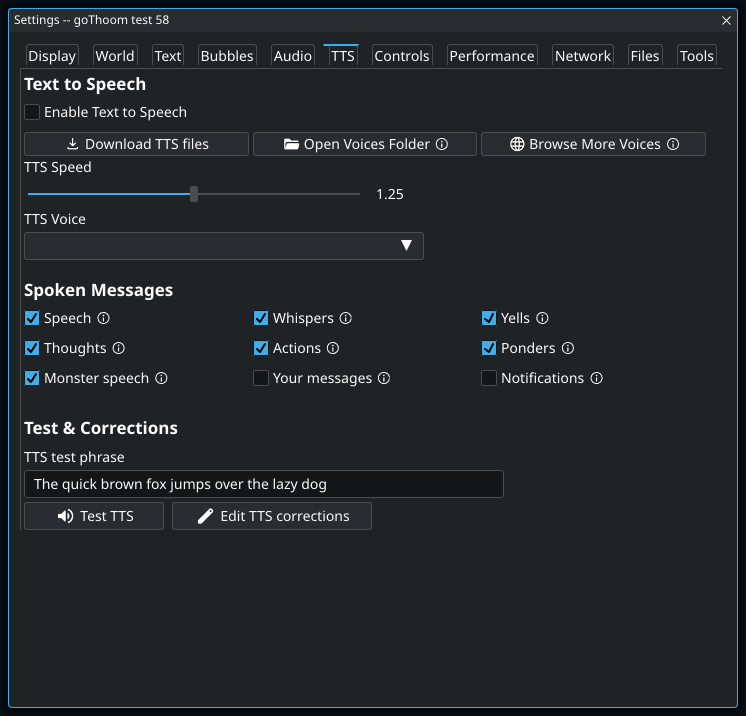
- 1
The voice menu is populated from installed Piper models. The empty menu in this example means a usable voice has not been found; enabling speech alone does not provide one. Download the TTS files, select a voice, then test a sentence before relying on spoken chat. The Audio mixer controls speech volume separately.
The download button reads TTS files installed and is disabled when the required files are already present. An empty voice list means no usable voice was found. The menu depends on the files installed on your machine.
To silence one speaker without turning speech off, use /notts add Player Name. Use /notts list to inspect the list and /notts remove Player Name to allow that speaker again.
Balance game sounds, music, and speech
- Open Audio from the toolbar. Check that master output is not muted.
- Enable the channels you want and set their levels. Lower Music or Game if speech is hard to hear.
- For music resources, open Settings → Audio → Music SoundFont. Install an optional SoundFont through Download Files if needed, then choose it from this menu.
- Try sound-effect and bard-music enhancements separately. Their ambience controls let you reduce the effect without changing the main channel volume.
- If audio stutters, inspect the Music Buffer setting and performance in the same session. Keep a note of your starting values so you can undo experiments.
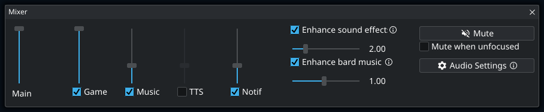
Notifications
Game notifications and their sound start enabled for falling, recovering, shares, and friends coming online. Mentions play their own sound; optionally, they can also create a desktop notification while the client is in the background. Notification Settings chooses which events matter and how they are delivered. You can configure on-screen duration, sound, volume, desktop prompts, and whether background mentions notify. Use Send Test Notification to verify the result.
Choose which events interrupt you
- In Settings → Audio, enable Game Notifications and open Notification Settings.
- Choose events such as Fallen, Not fallen, Shares, and Friend online.
- Set Display Duration (sec) for on-screen notices.
- If you want notices while using another app, enable Notify when in background, then use Send Test Notification. Check operating-system notification permissions if it does not appear.
- Use the Audio mixer’s Notif channel to balance notification sounds independently of game audio.
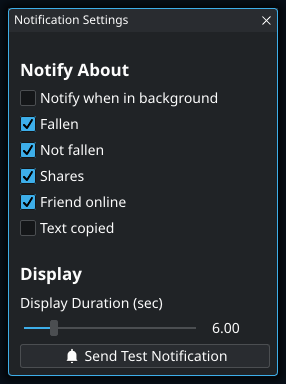
08 · Automation
Macros, scripts & hotkeys
Choose a simple key binding, a text shortcut, a legacy macro, or a Go script. The dedicated guide explains how to install, configure, write, and troubleshoot each kind of automation.
09 · Movies, recording, and screenshots
Capture a session and revisit any moment
Record
Click Record while connected to begin, then click it again to finish. If you click it before connecting, recording is armed and begins after login. Recordings are written to Movies under the user data directory, with the character and timestamp in the name.
Automatic recording starts off. Settings can auto-record every login session, ask what to do when a recording finishes, and compress a saved movie into ZIP. A recording is finalized when the session or app exits normally.
Keep a recording automatically
- Open Settings → Files and enable Auto-record sessions.
- Connect a character. The client starts the session recording automatically.
- Use the toolbar’s Record control if you want to stop early; otherwise the recording is finalized when the session ends normally.
- Use the save dialog, when enabled, to rename the movie or compress it as a ZIP.
- Find it in the
Moviesfolder under Open User Data Folder. Keep a backup if the session matters to you.
Play and seek
Disconnect first, return to Login, and choose Play movie file. goThoom accepts .clMov files and ZIP packages containing one. Movie playback never begins while a server connection or connection attempt is active.
- Drag the time slider to seek.
- Skip backward or forward by 5 or 30 seconds.
- Pause, resume, halve, double, or fine-tune playback speed.
- Use Stop Seek to cancel a long rebuild.
- Close Movie Controls or press Exit to return to Login.
Movie artwork is prepared and cached at the scale fitted to the current game view, including in smaller laptop layouts. Missing artwork is recorded after its first failed lookup instead of being retried every frame. During seeking, goThoom suppresses transient notifications, notification sounds, text-to-speech, and think overlays so scanning through a recording does not flood the desktop or audio output.
Screenshots
Tools → Snap can capture the visible game view or the full client window, then writes a PNG or JPEG to Screenshots under the user data directory. Debug Settings can temporarily hide mobiles or moving objects for specialized captures.
Save a screenshot with or without name tags
- Arrange the view you want to capture, then open Tools → Snap.
- Enter a filename. Choose Game view only for the playfield or Entire client window to include your panels.
- Choose PNG or JPEG. PNG keeps UI text crisp; JPEG produces a compressed image.
- Uncheck Include name tags if you want to hide overhead names in this capture.
- Press Capture. The options window closes before the image is taken.
- Use Open Folder to find the saved image in Screenshots. Duplicate names receive a number rather than replacing an existing image.
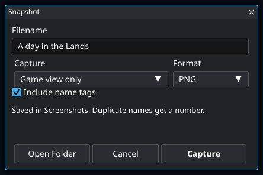
- 1
This hides overhead names for the capture without changing your normal name-tag preference. It does not remove names from Chat, Console, or Players if you capture the entire client. Check those panels before sharing a screenshot of a private conversation.
10 · Palette and settings commands
Reach almost anything from the keyboard
Command palette
The palette searches by action name and descriptive text. It can open windows, jump to settings, enable or configure scripts, run player actions, and insert or execute commands. A selected-player action uses the player currently selected in the Players window.
Text access to settings
The local /setting commands let you discover and change settings from the input bar:
/setting search shadows
/setting get rendering.character_shadows
/setting set rendering.character_shadows true
/setting reset rendering.character_shadowssearch accepts ordinary words and reports matching setting names. get prints the current value and accepted type. set parses the new value, applies it immediately, and saves it. reset restores that one setting to its default.
Start with /setting search and a visible label fragment, such as volume, bubbles, tiled, or shadows.
11 · Files and customization
Know what belongs to you
All persistent files live under one user data directory, separate from the application. Windows uses %LOCALAPPDATA%\goThoom. Linux uses $XDG_DATA_HOME/goThoom, or ~/.local/share/goThoom when XDG_DATA_HOME is unset. macOS uses ~/Library/Containers/com.goThoom.client. Use Settings → Files → Open User Data Folder to open the active location without guessing.
| Location | Purpose |
|---|---|
settings.json | Your saved global client settings. The current global setup, not the built-in defaults, is copied when a character profile is first enabled. |
profiles.json | Opt-in state and saved settings for logins that use a per-character profile. |
characters.json | Locally saved character entries and optional remembered login data. |
Scripts | Your Go scripts, author documentation, enabled.json, and permissions.json. |
Macros/Library | Your legacy .mac files and macro enablement file. |
scripts/storage | Private persistent values owned by scripts. |
shortcuts | Global and character-specific text shortcuts. |
Movies | Recorded .clMov sessions and optional ZIPs. |
Screenshots | Snapshots captured from the toolbar. |
piper | Local text-to-speech program, voices, and support files. |
Text Logs and Diagnostics | Saved chat/console history and application diagnostic logs. |
themes/palettes and themes/styles | Custom interface colors and styles, with generated examples and format notes. |
Move your files or prepare a backup
- Open Settings → Files → Open User Data Folder to locate the active files.
- For a backup, close the client before copying personalized files so they are not changing during the copy. Include character entries, settings, profiles, scripts and their saved data, macros, and anything you want from Movies or Screenshots.
- To relocate a category, open File Paths. Assets/audio, logs, legacy macros, and Go scripts can use separate locations.
- Choose a folder and decide whether to enable Copy existing files to the selected folder. The client checks access and conflicting files before saving the change.
- Wait for the operation to succeed. If it reports a conflict or failure, resolve that before trying again; do not assume the active path changed.
- Restart goThoom after a successful path change. Already-open logs and loaded assets continue using their session locations until restart.
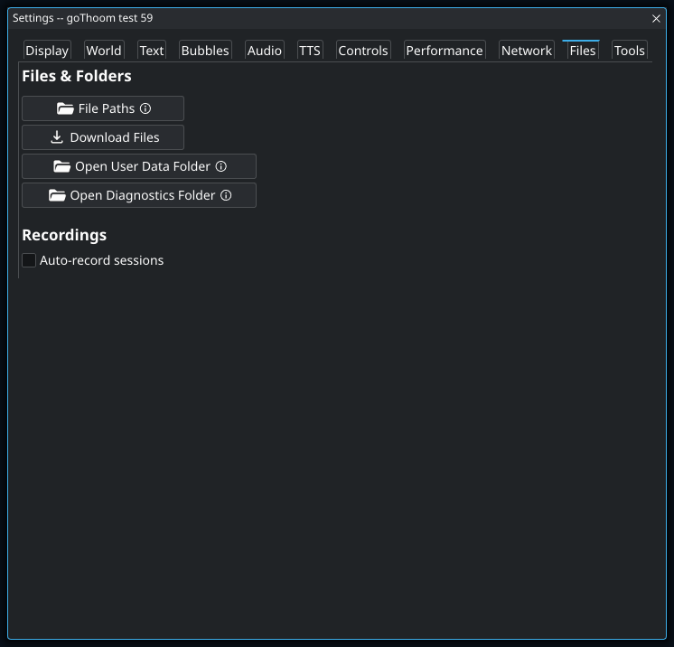
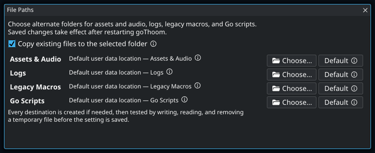
- 1
Use copying when the new folder should start with your current files. Different files with the same destination names cause the move to fail rather than overwrite them. The client checks access and verifies the copy before saving the new path. Restart after a successful change so loaded assets and open logs use the new location.
Report a problem with useful details
- Write down your goThoom test number, operating system, UI scale, and your selected window layout.
- List the steps from a working state to the problem, including the layout name and whether Chat and Console are combined.
- Capture the affected window with Tools → Snap → Entire client window.
- Open Settings → Files → Open Diagnostics Folder. The application log is
goThoom.log, with rotated backups. - For scripts, include the script name and the Info panel’s copied error. Include relevant log lines around the failure when reporting it.
Use GitHub issues or the project’s Discord. A screenshot plus repeatable steps is more useful than “the window is broken.” Review what you share if the capture includes private conversation.
Custom background
Place an image named background.png directly in the user data directory to replace the client background.
Backups and upgrades
Replacing the application does not replace the user data directory. On the first launch after upgrading from an older portable Windows or Linux version, goThoom copies existing data, themes, Text Logs, and logs from the application folder into the new location without deleting the originals or overwriting files already present there. Launch that first upgraded version from the existing application folder so it can find the portable data. After migration, future application replacements need no special file handling.
The user data directory still contains the personalized files worth backing up. If the old application folder was moved or deleted before migration, manually copy its writable folders into the new user data location.
12 · Troubleshooting
Fast answers to common problems
The client cannot connect
Confirm Clan Lord itself is available, then retry. Open Settings → Network → Edit Server List to verify the configured server. Firewalls must allow the client’s TCP and UDP traffic.
Artwork or sound is missing
Open Settings → Files → Download Files and let resource checking finish. Ensure the client can write to its data folder and that security software has not quarantined the downloaded archives.
A window is missing or off-screen
Open Settings → Display → Window Layout and check the selected arrangement and Combine chat + console. If needed, choose Reset Windows. This restores layout without resetting unrelated graphics, audio, or control settings.
Chat is separate, but I cannot type into it
Press Enter to reopen the input bar. Check Settings → Controls → Input bar always open. Chat and Console share their draft and history. Check the selected arrangement in Window Layout. Follow the separate-chat walkthrough.
The dividers move together
Auto-size side panels is on. That makes a divider drag move the game sideways while preserving its automatic width. Turn it off in Window Layout to keep the current sizes and resize the two sides independently.
The voice menu is empty or Test TTS is silent
Install a Piper voice in Download Files, select it in Settings → TTS, and test with the client focused. Check master mute, the TTS channel, and Mute when unfocused in the Audio mixer. See the speech setup steps.
Scrolling jumps or does not reach the bottom
Resize the window once and retry with the pointer directly over its list. If it persists in the current release, capture the window name, platform, UI scale, and exact steps and report it on GitHub or Discord.
A script does nothing
Open Scripts and confirm the correct Player or All box is selected. Scripts start at successful login, so nothing runs while you are at Login. Check Info → Permissions, then read validation/runtime errors and the Console. Check whether its trigger text, expected message source, or hotkey matches what the game actually produced.
A macro key or script key does not fire
Open Actions → Keybindings to see active bindings and their owners. Legacy macros and earlier registrations can shadow a later binding. Use Test Keyboard/Mouse to confirm the physical input name.
Performance is poor
Enable Show FPS in Display while testing. Try the iGPU or lower quality preset, reduce shader lighting and shadows, lower artwork processing, and disable animation blending. Use Potato GPU only for limited-VRAM devices; it trades loading smoothness for reduced texture memory.
Audio or TTS is silent
Check master and channel toggles in Audio, focus muting, and the relevant volumes. For TTS, enable Chat TTS, install a Piper voice through Download Files, and press Test TTS. Review Console output for a missing voice or executable.
A movie will not play
Movie playback is intentionally blocked while connected or connecting. Disconnect, return to Login, and choose Play movie file. Supported inputs are .clMov and ZIP files containing a movie.
When reporting a bug
Include the goThoom release, operating system, what you expected, what happened, and the smallest repeatable sequence. Screenshots and relevant Console lines help. Do not post passwords, saved credential files, or private chat logs publicly.